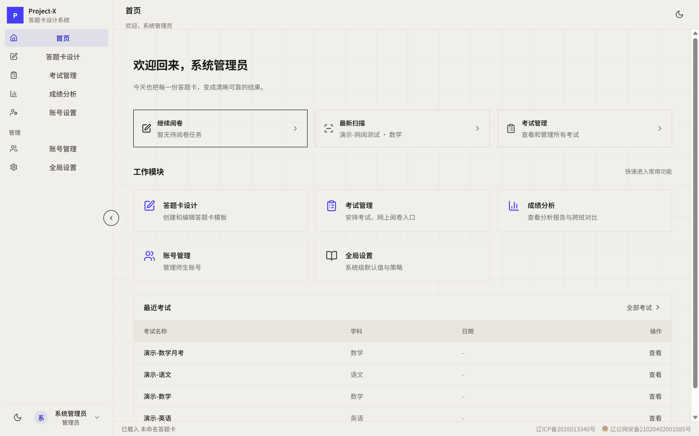

大连市第五中学信息化部 · 全栈自研 · GPL-3.0 开源
从人工阅卷， 到智慧学情。
试卷星 Project-X 是一站式智能试卷管理系统：从答题卡设计、高速扫描、 自动阅卷，到成绩分析与 AI 弱项诊断——全流程自主可控，成绩数据可留在校内。
服务已上线 · 当前发布 v2.0.0 · v2.1.0–v2.3.0 五个里程碑已合入主干 · 由五中人，为五中人，服务五中教学

模块
不只是一个阅卷工具。
六个模块覆盖考试的完整生命周期——设计、施考、扫描、阅卷、分析、管理，全部跑在学校自己的服务器上。
答题卡设计
创建和编辑答题卡模板
对标专业制卡软件：单选、多选、不定项，填空题支持自定义横线、插入图片与文字注释；A4 毫米级排版，多选分档给分规则一应俱全，6 学科模板一键生成，导出印刷级 PDF。
考试管理
安排考试、网上阅卷入口
考试全状态流转：draft → active → grading → closed。支持晨测 / 大考双模式，权限粒度随时切换；绑定答题卡、年级与班级，扫描批次与阅卷任务在同一处调度。
高速扫描
扫描仪直扫或图片导入
TWAIN 2.5.1 SDK 直连扫描仪（v2.2.1 起内置入库），SSE 实时推送扫描进度，扫描会话后台执行、随时可取消；也支持已有图片批量导入。识别与扫描端为独立原生构建，扫描图像默认 30 天保留期，自动清理。
网上阅卷
客观题秒判，主观题多评
客观题由 OpenCV 引擎自动判分；主观题按大题切块分发，支持 2P/3P 多评、争议仲裁与断点续批。PAD 优先批阅界面，内置文字 / 手写批注（palm rejection），学生端可查看。
成绩分析
查看分析报告与跨班对比
校排班排、偏差值、Z 值、百分位，分数段分布与箱型图；逐题难度 P / 区分度 D 双指标与知识点弱项诊断，内置新高考赋分引擎，总分与逐题得分永久归档可追溯。
账号与权限
管理师生账号
RBAC 三级权限模型，自动隔离数据可见范围：管理员、教师、学生各见其所。皮肤与界面偏好账号级持久化，换设备自动恢复；bcrypt 密码哈希，认证与安全关键链路均有自动化验证。
最新进度 · v2.1.0–v2.3.0 五里程碑已合入
主干已经走到哪一步？
公开发布线仍为 v2.0.0；v2.1.0–v2.3.0 五个里程碑已合入主干（皮肤切换 → 引导层 → 难度/区分度 → TWAIN 扫描闭环 → 纸锋皮肤），正在随发布流程推进。下面只列已经实现并验证的能力。
双皮肤视觉系统
纸锋 Paper Edge + 明澈 Flat 2.0
v2.3.0 落地「纸锋 Paper Edge」，与「明澈 Flat 2.0」并列可选；明暗两维度正交，皮肤偏好账号级持久化，换设备自动恢复。v2.1.1 起首次进入登录页前强制二选一引导层（两张大预览卡），切换入口收敛为登录页 + 账号设置两处。
知识点难度 / 区分度
难度 P · 区分度 D 双指标
成绩分析「题目分析 → 知识点薄弱环节」每行带难度 P / 区分度 D 双指标徽章，并补齐选择题选项统计与跨班雷达对比，教研改进有据可依。
晨测 / 大考双模式
权限粒度随时切换
创建考试可选晨测（教师全量可见）或大考（精细权限），考试详情页管理员可随时切换，一套系统覆盖随堂测与正式大考。
PAD 优先批阅 + 批注
左图右分 · 大按钮打分
左图右分、大按钮打分、滚轮缩放、90° 旋转；内置文字 / 手写批注（palm rejection），学生端可回看老师逐题批改。
试卷池领卷
原子领取 · 自动回池
网阅教师从试卷池领取下一份待阅试卷，系统用原子更新避免并发撞卷；提交后按状态回池或离开，管理员可查看汇总并释放任务。
移动端三档适配
480 / 768 / 1024 断点
手机底部导航 + 抽屉菜单，表格卡片化，Home 页重构；480 / 768 / 1024 三档断点覆盖手机到平板，手机阅卷查分不再将就。
大考组与并列排名
多场考试统一分析
多场考试归入大考组统一分析；并列排名按规则处理同分，成绩报告更贴近真实教学场景，历次趋势追踪更连贯。
Web / 扫描端双端
浏览器教学端 + Windows 扫描端
教师与学生通过浏览器使用设计、考试、阅卷和分析；扫描仪直扫、文件导入与原生识别集中在独立 Electron 扫描端，支持 x64 / ia32。
TWAIN 扫描链路闭环
8 项缺陷修复 · PX-COR-009 闭环
v2.2.1 修复扫描链路全部 8 项缺陷：告别 60 秒扫描卡死，双面 / 多页不丢页，灰度 / 黑白不假彩色，中文路径可保存；TWAIN 2.5.1 SDK 入库（换机器可复现构建），扫描会话后台执行、随时可取消。
工程细节
为一所学校的
真实场景设计。
不是通用 SaaS 的妥协方案。每一处取舍，都来自五中机房、阅卷室与教研组的真实反馈。
自研 C++ 识别引擎
OpenCV 4.13 视觉识别管线：四角定位标记校正透视，填涂区、学号区、红笔分数格分区识别。低于置信度阈值的答题卡自动标记「待复核」，绝不静默猜分。
- 定位标记 → 透视校正 → 区域切分
- 填涂识别 + 学号识别 + 分数格识别
- 低置信度自动进入人工复核队列
多评与仲裁机制
主观题支持 2P / 3P 多人独立评阅，分差超阈自动进入仲裁；断点续批让阅卷老师随时停下、随时继续，进度不丢。
兼容老旧机房
识别引擎与扫描桥均为原生 C++17 编译，提供 32 位预编译包——十年前的机房电脑也能跑扫描端，不需要为学校换新硬件。
实机界面
打开浏览器，就是工作台。
教师与学生走浏览器，扫描端是 Electron 桌面应用，学生另有微信小程序随时查分。下图为系统首页实机截图（纸锋 Paper Edge 皮肤，自 v2.3.0 起与明澈 Flat 2.0 并列可选）。
Home 仪表盘快捷入口，创建和编辑答题卡模板，6 学科模板一键生成
安排考试、网上阅卷入口，晨测 / 大考双模式可切换
难度 P / 区分度 D、跨班对比与知识点弱项诊断
师生账号与皮肤偏好，RBAC 三级权限自动隔离
全流程
一条流水线，走完阅卷全程。
从答题卡设计到学情报告，五个环节无缝衔接，无需任何第三方外包。
数据流全程在校内闭环：识别结果落库 → 对比答案键 → 成绩归档 → 聚合分析，扫描图像 30 天自动清理。
AI 诊断
让 AI 读懂每一张卷子。
GPT、DeepSeek、Gemini 多服务商自由切换。AI 不只是写报告—— 它直接阅读原卷图片，为每一道题标注知识点，再用得分率告诉你： 这个班到底弱在哪里。
- 知识点自动标注，多模态模型逐题分析
- 弱项诊断：如「勾股定理得分率 62%」一目了然
- 一键生成班级 / 年级成绩分析报告
- 导出前三步检查：分值验证 → 原卷预览 → 知识点分析
对比
为什么不用外包 SaaS。
报错频繁、费用高昂、受制于人——这是 Project-X 立项时要解决的三个问题。
使用场景
现在就能用试卷星做什么？
四种角色，各取所需——权限系统自动保证每个人只看到自己该看的。
教务 / 管理员
- 创建考试并绑定答题卡、年级与班级
- 批量导入学生名单，管理师生账号
- 监控扫描批次进度与待复核队列
阅卷教师
- 浏览器 / PAD 打开即批，大题自动切块分发
- 多评任务自动流转，争议卷进入仲裁
- 断点续批，批到一半离开也不丢进度
班主任 / 教研组
- 查看班级排名、得分率与箱型图分布
- 跨班对比与历次考试趋势追踪
- 一键生成 AI 弱项诊断报告用于教研
学生
- 浏览器 / 小程序随时查分，只看自己的成绩
- 查看逐题得分与知识点掌握情况
- 了解自己在班级 / 年级中的百分位
透明说明
我们也明确写出了边界。
一套诚实的系统，应该先说清楚自己不做什么。
系统负责切块、分发、多评与合分，但手写解答的评判始终由老师完成——AI 不代替教师打分。
阅卷与分析完全离线可用；仅「AI 知识点诊断」功能需要调用第三方大模型 API，且可按服务商自由切换或关闭。
严重污损、歪斜的答题卡会被标记为低置信度并进入人工复核队列，系统不会静默猜测结果。
Project-X 是为五中教学场景自研的内部系统，以 GPL-3.0 开源，不提供商业化 SaaS 服务。
文档与资源
不止一页，
完整理解 Project-X。
从架构书到权限模型，所有设计与实现细节都以文档形式沉淀在仓库中。
项目架构书
技术栈全景、数据流架构、目录结构与构建流程，一份文档看懂整个系统。
用户指南
面向教师与管理员的操作手册：从设计第一张答题卡到生成成绩报告。
数据库文档
SQLite 表结构、WAL 日志模式、数据保留策略与迁移脚本说明。
权限模型
RBAC 三级权限矩阵，认证、权限与安全关键链路持续自动化验证。
原生模块
答题卡识别引擎与 TWAIN 扫描桥的 C++ 实现细节与编译指南。
开源许可
GPL-3.0 全开源源码，欢迎审阅、复刻与二次开发。
技术底座
自主可控的技术底座。
全栈自研，开源 GPL-3.0。数据留在校内服务器，彻底告别外包 SaaS。
双原生引擎
OpenCV 视觉识别引擎 + TWAIN 扫描仪桥，C++17 实现，性能与精度完全可控，兼容 32 位老旧机房电脑。
双数据库模式
本地 SQLite 零依赖离线可用（WAL 模式提升并发读），或远程 MariaDB 生产部署，附一键建库与迁移脚本。
权限与安全
RBAC 三级权限自动隔离数据可见范围，bcrypt 密码哈希，认证与安全关键链路均有自动化验证。